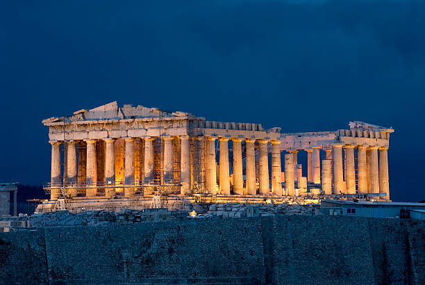
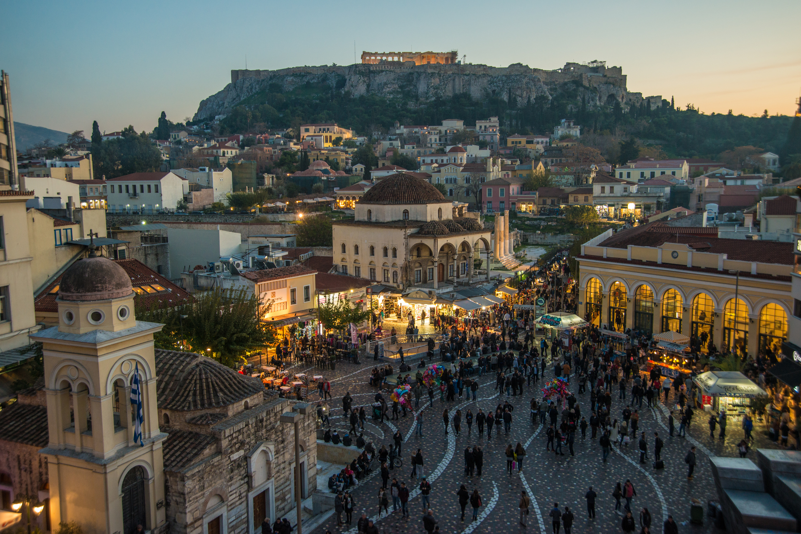
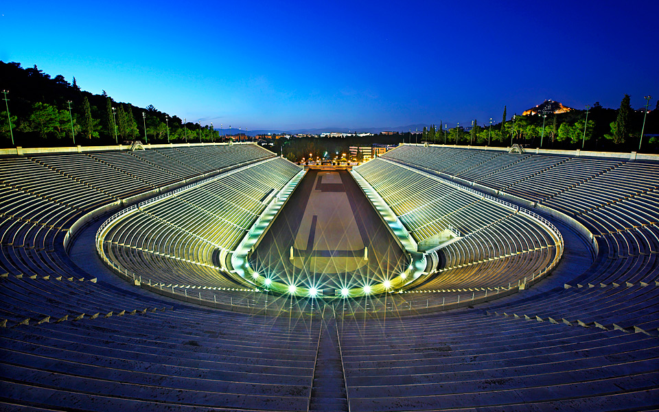

Greece is an ancient and beautiful country,
characterized by ancient civilization and history.
It is also characterized by picturesque nature and
has many beautiful tourist attractions
that are waiting for you to visit.
Here you can find the most famous tourist attractions in Greece..
GREECE Restaurants
Greece has a lot of things you
can talk about to her
However, we will discuss here
the most famous restaurant in
Greece in the following table:
Restaurant Name
Describtion
Tudor Hall
Tudor Hall is housed by the five-star king George Hotel. Located on the seventh floor, it provides an expansive view of the Acropolis. The décor of the restaurant is neoclassical and they offer contemporary Greek food and some signature cocktails.
Lithos Restaurant
Lithos is one of the authentic Greek restaurants located in the Psyri neighbourhood. Lithos stands out in this area with its charming interiors, not so heavy on the pocket costs and some delicious seafood and lamb shank.
Funky Gourmet
This Michelin star restaurant is located in the Keramikos neighbourhood. The chef here gives the Greek food a modern twist at a molecular level.
Ambrosia Restaurant
Located in the beautiful area of Lindos right across the museum, Ambrosia restaurant is one of the high-class restaurants in Greece. It offers a very cosy environment with sophisticated decor and beautifully adorned interiors which can accommodate 40 diners at a time.
La Maison Restaurant
his is a beautiful restaurant located in the vibrant Imerovigli village in Santorini. It is perfectly located here offering some of the best views of the area. One can experience panoramic views of the nearby islands, volcanos and the pristine Caldera sea.
Here you can find more details about restaurants..
Greece Magic
1 / 3

Acropolis (Ακρόπολη)
This ancient citadel, built in the fifth century B.C.,
towers over the city and is home to some of the most
impressive ancient ruins, buildings, and artifacts.
The most famous temple, the Parthenon, was dedicated to the
goddess Athena and is considered the peak of Greek art.
2 / 3

Plaka (Πλάκα)
Wander through the narrow cobblestone alleys of this neighborhood
at the foothills of the Acropolis. You'll find quaint shops selling jewelry,
clothes, ceramics, and souvenirs, plus sidewalk restaurants and family-run
taverns serving authentic Greek food. the time.
3 / 3

Panathenaic Stadium (Παναθηναϊκό Στάδιο)
The Panathenaic Stadium dates back to the 4th century B.C.
and was the site of the first modern Olympic games in 1896
and remains the starting point of the Olympic flame torch relay.
Made entirely of white marble, it's an impressive sight
that's earned it the nickname Kallimarmaro or "beautiful marble".
Visit one of the most beautiful spots in the Aegean. It’s car-free, so a visit here is a little like a step back in time where the only transport around the island is by donkey, on foot, or around the coast on speed boat....
A walk through the Old Town of Rhodes, said to be the largest occupied medieval city in Europe, feels akin to strolling through a film set Visit it and enjoy your time... !